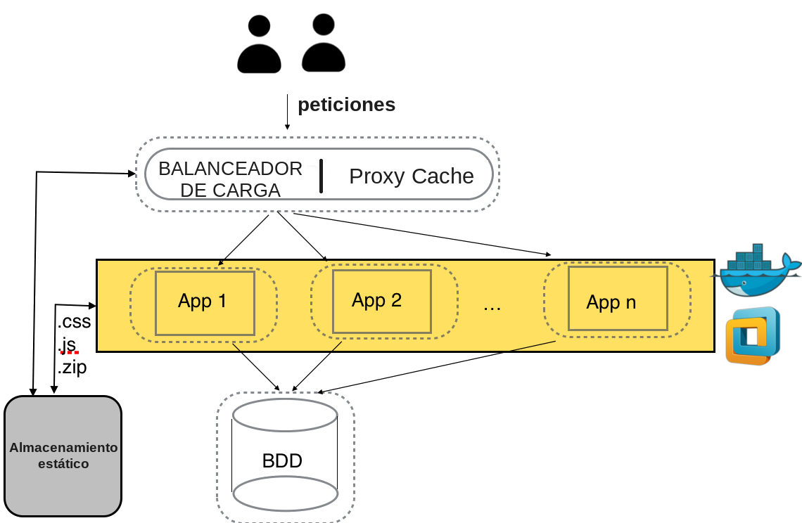

6.6. Alta disponibilidad
Un siguiente nivel para mejorar el rendimiento sería la ALTA DISPONIBILIDAD mediante REDUNDANCIA de servidores. En estos casos tenemos un servidor intermedio(proxy inverso) que puede actuar, por ejemplo, como:

Balanceador de carga.
Proxy cache
{kind=link}
Tenemos diferentes alternativas si queremos configurar un escenario de redundancia (La mayoría de las webs que visitamos en realidad trabajan con estos esquemas)
Apache pueden configurarse para actuar como servidor intermedio (documentación oficial).
En el caso de NginX, es uno de los puntos fuertes del programa (guía en la documentación de CLOUDING.IO).
Existe SW específico que nos pueden ofrecer más alternativas de configuración (una de las más populares es HAPROXY).
Importante
¿Te atreverías a montar tu primer balanceador de carga? Una buena manera para comenzar podría incluir la combinación de:
Una MV en la que se ejecute Apache y permita la ejecución de contenedores.
Conjunto de contenedores en la MV anterior ejecutando alguna imagen de Apache. Puedes buscarla en el Docker Hub.
Configuración del balanceo en NginX (una de sus especialidades), con el tutorial anterior.
Configuración del balanceador en Apache, tal y como muestra el siguiente video.
En un entorno real se deben tener en cuenta muchos factores a la hora de configurar correctamente la alta disponibilidad, y lograr que nuestro sitio web funcione correctamente y de manera transparente para l@s usuari@s, por ejemplo:
Lograr la persistencia de nuestra estructura de contenedores mediante el uso de estructuras de almacenamiento de Docker.
¿Los servidores web alojados en los contenedores deben “apuntar” al mismo código web? (Sticky sessions)
¿Usan la misma BD?
Automatizar la puesta en marcha y la parada de nuestro escenario lo máximo posible (Docker-compose + Kubernetes)